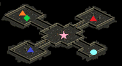

カダーム・ギガスの寺院
| 制限Lv | 405～435 | ||||
|---|---|---|---|---|---|
| 秘密の入口 | 暴かれた納骨堂B1(88,25) | ||||
| 報酬 |
|
||||
| ミニマップの表示条件 | - | ||||
| フィールド属性低下 | 1層目 全属性抵抗-130％ 2層目 全属性抵抗-150％ |
||||
| 罠 | 1層目 床罠なし 扉罠なし 2層目 床罠あり 扉罠なし |
<マップ>
秘密の入口 暴かれた納骨堂B1
| ● ● |
… 移動ポータル … 秘密の入口 |
秘密ダンジョン 1層目 カダーム・ギガスの寺院
| ○ ● ◆ ① ② ③ ④ |
… 初期位置 … 移動ポータル … 冒険家 … 絶望のベルディン … 恐怖のジュレーン … 憎しみのダハープ … 破壊のバンドール |
秘密ダンジョン 2層目 カダーム・ギガスの寺院
|  | ● ★ ◆ ▲ ▲ ▲ |
… 移動ポータル … 魔方陣 … ハウロカーン … ガイナス … ソドムブラー … カダーム・ギガス |
<手順>
1層目
リーダーが冒険家に話す。
ここで選択肢
(1)「簡単」にします。 → 制限時間35 + 60分延長
(2)「普通」かな。 → 制限時間35 + 30分延長
(3)「難しい」で行きます。 → 制限時間35 + 15分延長
(4)「非常に難しい」に挑戦します！ → 制限時間35分 延長なし
入口の扉が開く。
中央広場のMOBを全て狩る。
礼拝堂への扉が開く。
各礼拝堂のレッドアイ幹部（Lv420）Zinを狩る。HP1/2ダメ攻撃あり。
絶望の礼拝堂 絶望のベルディン
恐怖の礼拝堂 恐怖のジュレーン
憎しみの礼拝堂 憎しみのダハープ
破壊の礼拝堂 破壊のバンドール
2層目への扉が開く。
2層目
リーダーが★魔方陣をクリック。
ギガスの追従者（Lv420）Zin13匹が出現、狩る。
ガイナスの礼拝堂とソドムブラーの礼拝堂への扉が開く。
ガイナスの礼拝堂のガイナス（Lv430）Zinを狩る。
タゲを取るとガイナスソード（Lv425）Zin5匹が出現。
ガイナスソードは無限湧き、倒しても経験値1なので無視。
ガイナスを倒すとHP1/2ダメ攻撃発生。
ソドムブラーの礼拝堂のソドムブラー（Lv430）Zinを中央まで釣り、狩る。
ソドムウィップ（Lv420）Zinは無限湧き、倒しても経験値1なので無視。
ソドムウィップは2人以上で近づくとブリザード（強力な範囲水ダメ）攻撃をしてくるので、釣り以外は近寄らないこと。
ソドムブラーと共にソドムウィップを釣ってしまった場合は釣りがソロで倒しておく。
ソドムブラーを倒すとHP1/2ダメ攻撃発生。
カダーム・ギガスの礼拝堂の扉が開く。
リーダーがハウロカーンに話す。
NPCハウロカーン、グリーク教修道士がMOB化する。
ハウロカーン（Lv430）Zin、グリーク教修道士（Lv430）Zin4匹を通路まで釣り、狩る。
カダーム・ギガス、ウォームギガス4匹が出現。
カダーム・ギガス（Lv435）Zinを通路まで釣り、狩る。
カダーム・ギガスは3人以上で近づくとHP1/2ダメ攻撃をしてくるので、ボス火力以外は近寄らないこと。
カダーム・ギガスを倒した瞬間クリア、崩壊のカウント開始。
ウォームギガス（Lv430）Zin4匹を狩る。
<補足>
床罠は2層目のガイナスの礼拝堂とソドムブラーの礼拝堂にのみ大量にあり。状態異常対策必須。
大幅なフィールド属性低下があり、エレメだけでは補うことが不可能。抵抗装備を用意すること。
ミニペットのスキルによりフィールド属性低下の軽減、魔法抵抗の上昇が可能。
最低限必要な装備
ブレ込みHP3000 （HP3000では一撃即死の場合もあるため、HP4000↑または回避装備を推奨）
薬回復200％ （250％推奨）
致命打抵抗70％
自前魔法抵抗 1層目 水50％ 風50％ （各90％↑推奨）
2層目 水70％ 闇70％ （各110％↑推奨）
復活 （職により心臓、刃油、フルヒ、灰など）
上記はあくまでもBISありフルメンバーPTの場合の最低条件。
BISなしの場合は、状態異常・低下・呪い抵抗、尻尾大量も必要。
一般的なPT構成
BIS WIZ ボス火力（テイマ 遠距離火力+足止めリトル） 低下ネクロ 釣り ポタ2
各職の装備・立ち回り
| 職 | 注意事項 |
|---|---|
| BIS | スキル重視。回復に専念、余裕があればTU、ミラー。呪われた戦士と骸骨傭兵にはTU有効。ミラー死に注意。 |
| WIZ | 支援用にスキル、アスヒ用に速度装備。アスヒに専念、余裕があればメテオ。釣り過ぎ死亡に注意。 テイマやネクロなど先行する人に着いて行き専属アスヒでも可。 |
| テイマ | 先行してタゲを取る。 ペットの回復には遠慮なく申告してアスヒをもらって可。ただし間に合わない場合は惜しまずフルヒを使うこと。 カダーム・ギガス戦時にペットが死亡すると、蘇生やリザでは立直しが間に合わないため灰、フルヒを用意。 |
| ネクロ | 先行して低下をかけるためにHP・魔法抵抗を完備。立直す場合は烈火でボスを止める。 |
| リトル | 花投げ、飴投げ、POT投げに専念。ネクロがいない場合はノヴァ。テイマがいない場合はボスの足止め。 スキップジャンプで安全に釣りができる。 |
| 釣り | 水抵抗を完備。 |
| 他火力 | エレメの範囲内で行動すること。釣り過ぎに注意し、1匹ずつ確実に倒していくこと。 |
その他の要注意MOB
1層目
呪われた戦士、ラフディスラクトの物理ダメ、悪魔の使者の風ダメは非常に強力。HP3000では一撃即死の場合もあり。
2層目
全MOBがセミボス以上で非常に魔法抵抗が高いため、知識火力は弱化装備が必要。
魔法抵抗の高いMOB
| MOB | 魔法抵抗（％） | |||||
|---|---|---|---|---|---|---|
| 火 | 水 | 風 | 土 | 光 | 闇 | |
| ガイナス | 110 | 130 | 34 | 49 | 130 | 29 |
| ガイナスソード | 90 | 33 | 75 | 45 | 43 | 50 |
| ソドムブラー | 151 | 87 | 133 | 102 | 57 | 163 |
| ソドムウィップ | 125 | 64 | 39 | 125 | 34 | 93 |
| ハウロカーン | 100 | 97 | 92 | 92 | 57 | 57 |
| グリーク教修道士 | 75 | 63 | 58 | 58 | 82 | 82 |
| カダーム・ギガス | 114 | 55 | 71 | 57 | 35 | 113 |
| ウォームギガス | 99 | 50 | 57 | 41 | 15 | 94 |
カダーム・ギガス戦の攻略
カダーム・ギガスは射程範囲内に3人以上いる時とタゲが変わった時にHP1/2ダメ攻撃を行う。
射程範囲は約ポイズンガスの範囲程。
HP1/2ダメ攻撃の効果範囲はマップ全域。
ペットや召喚獣も1人として換算されるので、召喚獣は召喚解除しておく。
釣りがカダーム・ギガスを通路まで釣り、途中でネクロが低下をかけ、ボス戦開始。
ボス戦が始まってから低下をかけに近づくとHP1/2ダメ攻撃を発生させてしまうため、厳禁。
ボス戦の攻略方法は主に下の3通り。
攻略① ボス火力＝テイマ
テイマがソロで倒す。
ペットにタゲを取らせたらすぐに本体は攻撃命令がギリギリ届く距離まで離れる。
タゲが変わるとHP1/2ダメ攻撃を発生させてしまうため、
片方のペットのみに刃油を使用する、または％の異なる刃油を各ペットに使用して、片方のペットに確実にタゲを取らせる。
ペットとボスが重なっているとアスヒができないため、フルヒを用意。
ペットが死亡すると、蘇生やリザでは立直しが間に合わないため灰を用意。
BISはペットにギリギリパーティヒーリングが届く距離まで離れる。
WIZはペットにギリギリアスヒが届く距離まで離れ、ペットに集中アスヒ。BISがペットにミラーをかけている場合はBISにアスヒ。
ネクロは万一の場合に烈火ができるように準備してBISの後方で待機。
他メンバーはBISの後方で待機。
攻略② ボス火力＝遠距離火力 + 足止めリトル
遠距離火力がソロで倒す。
リトルはギリギリラビットラッシュが届く距離から足止め。
BISはパーティヒーリングが届く距離まで離れる。
WIZはアスヒが届く距離まで離れる。
ネクロは万一の場合に烈火ができるように準備してBISの後方で待機。
他メンバーはBISの後方で待機。
攻略③ 全員特攻
全員が薬回復を完備していれば、HP1/2ダメ攻撃を連発されても耐え切れる。
BISはヒーリング連打。
WIZは心臓アスヒ連打。
万一死亡した場合はリザを待たずに即自力で復活すること。
カダーム・ギガスを倒した時に死亡していると、経験値が貰えないので注意。
| 1層目 | ||
|---|---|---|
| MOB | 使用スキル | 詳細 |
| 絶望のベルディン 恐怖のジュレーン 憎しみのダハープ 破壊のバンドール （レッドアイ幹部Zin） |
アイスボルト | 水ダメ コールド |
| レッドアイピア | 攻撃・防御力・命中・回避率低下 | |
| フロストクェイク | 範囲水ダメ コールド | |
| 呪われた戦士 （幽霊鎧Zin） |
ソードアタック | 物理ダメ |
| スタンアタック | 物理ダメ スタン | |
| ブラインドアタック | 物理ダメ 暗闇 | |
| ラフディスラクト （オーガソルジャーZin） |
クラブアタック | 物理ダメ |
| フリーリジェネレーション | HP回復 | |
| 悪魔の使者 （マーブルガゴイルZin） |
フリーリジェネレーション | HP回復 |
| ソニックブロー | 風ダメ | |
| ウィンディクラップ | 物理+風ダメ | |
| ハウロカーンの目 （ドゥームスフィアZin） |
スネークアイ | 土+毒ダメ |
| ストンゲイズ | 石化 | |
| 嫌み | 命中・回避率低下 | |
| 骸骨傭兵 （骸骨剣士Zin） |
ソードアタック | 物理ダメ |
| カウンタースティング | 物理ダメ | |
| グリーク教修道士 （偽聖職者Zin） |
クラブアタック | 物理ダメ |
| ヒーリング | HP回復 | |
| ディテクティング | 索敵 | |
| バインディングモルプ | 物理+闇ダメ 移動・攻撃速度低下 | |
| 2層目 | ||
| MOB | 使用スキル | 詳細 |
| ギガスの追従者 （死の斧Zin） |
エクスアタック | 物理ダメ |
| ブラッドベルセルク | 攻撃力上昇 | |
| ピアスインパクト | 物理+火ダメ | |
| ガイナス （ライオンヘッド4 Zin） |
スタンアタック | 物理ダメ スタン |
| ワインディングサイズ | 物理ダメ スタン | |
| ソーンアーマー | ダメ反射 | |
| フォースドレイン | 物理ダメ Lv低下 | |
| RED STONEの情熱 | 物理+火+水+風+毒ダメ 攻撃・防御力・HP上昇 | |
| ガイナスソード （剣闘士2 Zin） |
嫌み | 命中・回避率低下 |
| スペクトラルフィスト | 物理+火+水+風+毒ダメ フリーズ | |
| ライフドレイン | 物理ダメ HP吸収 | |
| ソドムブラー （アンデッドロック4 Zin） |
フリーリジェネレーション | HP回復 |
| アイスボルト | 水ダメ コールド | |
| ワームバイト | 闇ダメ 移動不能 | |
| グルルムゲスプ | 火+闇ダメ | |
| RED STONEの情熱 | 物理+火+水+風+毒ダメ 攻撃・防御力・HP上昇 | |
| ソドムウィップ （パンタズドリーム2 Zin） |
ブリザード | 範囲水ダメ フリーズ |
| デッドリーナイトメア | 闇ダメ 睡眠 | |
| ハウロカーン （レッドアイ元老Zin） |
アイスボルト | 水ダメ コールド |
| レッドアイピア | 攻撃・防御力・命中・回避率低下 | |
| フロストクェイク | 範囲水ダメ コールド | |
| グリーク教修道士 （ダークプリーストZin） |
スリーピーホール | 物理ダメ 睡眠 |
| バインディングモルプ | 物理+闇ダメ 移動・攻撃速度低下 | |
| レンジヒーリング | HP回復 | |
| ダークブレス | HP上昇 | |
| カダーム・ギガス （装甲ボーンキメラ4 Zin） |
ブラッドエキスパンド | 攻撃力低下 防御力上昇 HP回復 |
| フリーリジェネレーション | HP回復 | |
| ポイズンガス | 範囲毒ダメ | |
| スペクトラルフィスト | 物理+火+水+風+毒ダメ フリーズ | |
| ウォークライ | 風ダメ スタン | |
| スポイルドウォーター | 水+闇ダメ フリーズ | |
| ウォームギガス （装甲ボーンキメラ2 Zin） |
フリーリジェネレーション | HP回復 |
| 死の予告状 | 即死 | |
| スペクトラルフィスト | 物理+火+水+風+毒ダメ フリーズ | |
| スポイルドウォーター | 水+闇ダメ フリーズ | |
秘密ダンジョン補足
- 通称「納骨秘密」- 難易度の高い秘密のため、ある程度装備が要求されてきます。